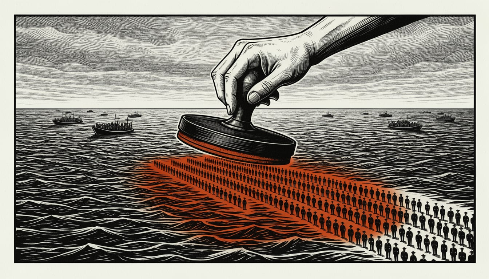

Commission wants to triple Frontex to 30,000 officers and 11.8 billion euros
The plan adds a quick reaction force and a bigger role in returns. Member states and Parliament must still agree, and most states saw no need for a big enlargement in February.

The European Commission wants to triple Frontex to 30,000 officers. A proposal on 27 October adds a quick reaction force, social media monitoring and a bigger role in returns. The EU's next budget draft sets aside 11.8 billion euros for the agency for 2028 to 2034. The European Parliament and the Council must agree on it.
The draft gives Frontex 11.8 billion euros, up from almost 6 billion in the current budget. In February, though, a Council summary showed most member states saw no added value or operational need for any significant enlargement. They "do not perceive at this stage an added value or operational need for any significant enlargement."
The 30,000 officers would come from three parts. A new European border and return reserve would count 17,000 officers and carry the expanded work on returns. Frontex's own staff would double to 6,000, with another 7,000 officers seconded from member states. The proposal's quick reaction force would be deployable at very short notice at the external border. Frontex's executive director would deploy it following a request from a member state.
The proposal also gives Frontex a new Online Monitoring and Response Centre. It would monitor publicly accessible social media for border-security risks and try to predict arrivals. Frontex would also be able to help organise returns from one third country to another, if the third country agrees. Von der Leyen said Europe proposes to strengthen Frontex so it can support member states whenever needed, including on returns. "Europe will always stand up for the protection of its borders."
The plan has critics. Tineke Strik MEP said the Commission risks turning Frontex into a European version of ICE, the US immigration agency. She said Europe needs a human rights-based approach to border management. Poland backs the plan. Its deputy interior minister said the country supports expanding Frontex's competences. The proposal now goes to the Parliament and the Council.